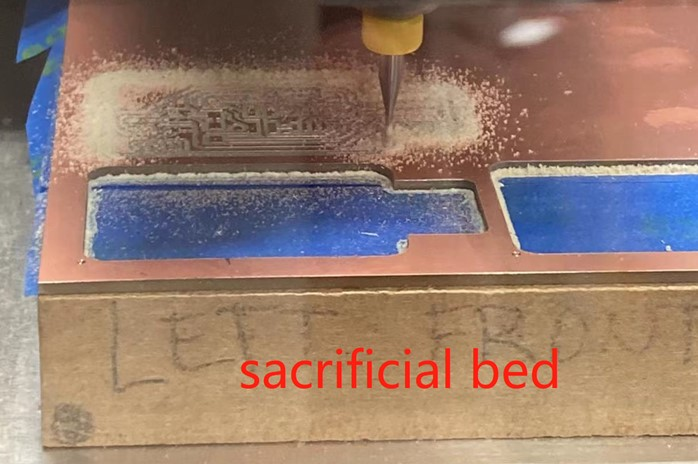

7. Electronics Production¶
Antti Mäntyniemi kindly used reciprocal teaching and maker education to let an absolute beginner not afraid of gettting started to learn the electronics.
Research¶
How to get a PCB¶
Stage 1 Background knowledge for absolute beginners¶
- What is a PCB? What is it used for?
This sounds like a stupid question for engineering students, but it is still a basic question like “What is scaffolding” to outsiders of pedagogy, or “disenchantment” to sociology starters.
So, PCB(printed circuit board) looks like below.

PCB industry started at the beginning of the 20th century. Bofore that, elctronic circuits were directly connected to each other in a point-to-point way, installed on a chassis. The circuits were heavy, large, bulky and expensive. From 1903, inventors including Albert Hanson, Thomas Edison, and Arthur Berry discovered that they could laminate flat copper layers (or foil) on an insulating board, where conductors could be plated.
The lines on the PCB board are called circuit traces or tracks. They can allow electricity to go through the components where programmes are installed.
However, if it is a fresh board waiting to be used, like what I learned in the first week, it can be called a PWB(printed wiring board).

In the following part, there are more key terms to keep in mind.
- Machine. The machine for the PCB milling in FabLab Oulu is Roland SRM-20. Of course, you have to set up parameters and run the machine from the connected desktop.
- Drill
Drill literally means to dig a whole through a surface. In pedagogy, “drill” is interpreted as practice.
Antti Mäntyniemi started the introduction by asking me whether I know 3D printing. I said no.
Then, he asked if I know x, y, z axis in spatial design. I said yes.
Now it is easy to understand: drilling in electronics design means to move the machine tool up and down vertically.
That is why drill deals with z axis.
- Mill
Mill is not to make a house to grind grains into flour. In electronics design, mill means to move the tool horizonally, hence x and y axis are used.
- rectangular-bit or v-bit.
When drilling and milling the PCB plate, the machine will use bit to realize the task. The 2 most frequently used bits are rectangular and V-shape (as below).

When the PCB plate is perfectly flat, the rectangular bit leaves a milled track with the width to be 0.4mm, while the V-bit, depending on how deep it drills into the copper foil, makes the width ranging from 0.2-0.5 mm.
When the PCB plate is curved, both bit shapes can create irregular milled tracks.
It is quite abstract to talk about 0.2-0.5mm. So I used the vernier caliper to visualize the parameters.

In FabLab Oulu, the most commonly used bits are rectangular style as below.

- PCB blank. The raw PCB working plate is called PCB blank. It has two layers. The lower part is a 1.6 mm plate; the upper surface is a 35μm copper foil (*1 mm = 1,000 μm).

The PCB format I made this time was UPDI format.
- Sacrificial MDF bed. This is a thick plate to hold the PCB working plate. MDF is a common choice. This sacrificial bed surface needs to be polished and engraved after worn out. 
It is very important to know the thickness of PCB plate (e.g., in my assignment the thickness is 1.635mm.) because if you set the drill tool into the bed and mill, the tool can be easily broken.
- Isolation cutting
Stage 2 Get 2 .rml files (the inner tracks & outline ) for milling¶
In Stage 2, I will introduce how to set up two files to be milled: PCB traces (the body part) and outline (the shape) on https://mods.cba.mit.edu/.
It looks quite scary at the first glance, but I marked the 6 main stepss to click and ignore at the same time.

The purpose of the big picture is to set the necessary parameters including the size of the PCB, the milling (peeling) parts, the width and depth of traces.
https://mods.cba.mit.edu/ allows FabLab Oulu users to set up parameters remotely through the big map above.
What I did was to go to the website → right click the mouse → choose programm → choose open server program → choose Roland PCB svg (the final file format is .svg).


step 1 delete the unnecessary window: the WebSocket device (press “delete”).

Then, right click the mouse in the empty place → choose file: save → get a new window named save file. Just leave it there at the moment.

step 2 load 2 .svg file (PCB traces and outline)
First, Antti gave me 2 pre-set .svg files for the PCB shape and body.
The whole work generally consists of 2 sections: the traces/inner paths of PCB, and the outline or shape of the PCB (for example, in this work the shape is a regular USB).
step 3 Invert the .svg files.
Look at the left upper corner of the whole map, select the inner paths .SVG file.
In the right window, click invert to redefine the zone to be removed.
It is important to remember that, in PCB milling setting, the black parts will be removed by the tools. The white parts are the copper layers that connnect the components via currents. So unlike vinyl cutting, you definetely don’t want to make the PCB functions inverted.

step 4 Set PCB default.
Without special intention, usually you don’t have to change anything. Usually, you will just go on.
step 5 Set the mill raster 2D parameters.
This is a key step to get the “millable” .rml files. Since a milled PCB consists of the traces and an outline, there will be 2 .rml files which require you to return from step 2 to step 5 to set up the outline svg file later.
As you can see, the 2D mill file is basically a raster file which considers pixels rather than lines. The tool diameter determines the copper zones to be removed. The bigger the tool diameter is, the more copper surface will be removed. The cut depth defines how deep the tool will go into the board.

Antti shared his experience of the three parameters: the diameter to be 0.3 mm; the cut depth as 0.07 mm (It is interesting as the thickness of copper layer is 35 μm (0.035 mm), so 0.07 mm doubles the thickness, allowing the 2 depth settings to be equal.

Of course, you can also try different tool diameters. Always keep in mind that the depth is critical especially when you have to set Roland machine by hand.For instance, in this PCB board, the thickness is 1.635 mm, so you should limit the max depth to be reasonable. Otherwise, the tool may drill through the whole PCB board, breaking itself when conducting the milling work.

After this, click calculate to get a redefined file which will be downloaded automatically. The format is .rml.
If you review the refined file, it shows the paths to be milled. The red arrows are the general sequences that the tool will go.
step 6 Finalize the setting.
First, reset the x/y/z parameters in origin to be all 0.

Then, click move to origin. The purpose is to generate a tool path that Roland milling machine can understand.
Also, rembmer to connect the outputs with inputs of step 1.

Now, redo steps 3-6 to set up the milling work of the outline.
One imporant note: click the invert You definitely do not want the whole PCB work to be removed away, leaving only the empty shape.

After getting the two .rml files.

Congratulations! I finished the PCB files setting.
Stage 3 Let’s mill it on machine!¶
In Stage, I practised realizing the milled PCB on Roland SRM-20 machine.
The working area is as below. You have to use the connected desktop to set up the machine.
step 1 stabilize the PCB plate and insert the tools
When milling work is on, the tool moves horizonally across the copper surface, which might cause subtle movement. In order to make the PCB plate stable, Antti introduced a smart solution:
- Use tapes to both the PCB bottom side and the top of the sacrificial bed.
- Apply a few drops of strong glue to attach the 2 sides. Avoid using too much glue as it may cause bulge to make the PCB plate not flat.
- Press a metal plate to attach the two sides for a while.
Now it is to insert the tools manually. My left hand held and push the tool vertically into the small hole of the working head; My right hand used the screwer to fix the tool (clockwise: fix; anticlockwise: loose).
step 2 set up the desktop parameters for Roland SRM-20
The general menu looks as below:

There are 5 small steps in the menu. I marked the critical contents in red (most related to z axis).
- Press View. The tool will go to the original position.
- Press X/Y at the bottom (Move). Then click ↑↓←→ arrows of X/Y axis to set the starting point of milling on X/Y axis (the working surface). The distance of movement is defined by Cursor Steop. If you choose Continue, the tool will move while you click the left mouse. If you choose x100, it moves for 1 mm.
- Press X/Y on the dark zone on the right (Set Origin Point). It will reset the X/Y point to be “origin”, shown as 0.00 mm on the left.
- Press Z at the bottom (Move). When moving the tool vertically, be careful when you see it is going to touch the PCB surface. Change the Cursor Step from Continue to x100 then to x10 to adjust the tool.
Next, click the cut on the right bottom to open a new pop-up window as below:
Delete previous jobs then click Add to load the 2 .rml files generated in Stage 2 (inner traces & outline).
It is suggested to do the inner traces and outline milling in order. I used the red tool to do the traces, then the yellow one for the outline.
As there are many residuals on top of the PCB, it is a good habit to use vacuum cleaner to remove the dust. Don’t worry. It won’t suck the freshly made PCB away in a second.

From my understanding, the milling work is a bit similar to laser cutting as below:


At last, I got the first UPDI PCB, which is the fundamental layer for the next steps.
A note: For absolute beginners, you might ask what UPDI means.
According to onlinedocs.microchip , UPDI stands for “Unified Program and Debug Interface”. Basically, it is an interface (Microchip proprietary)to allow external programming and debugging of a device through the chips.
In common language, it can be encoded from a “mother” language (it will appear later: SWD), and used to program another chip (for example: to programme a blinking LED through Arduino).
How to attach components on top of the PCB?¶
In this part, Antti Mäntyniemi taught me how to solder the electronic components on top of the PCB. Antti J guided me on the practice.
Stage 1 Get the needed components¶
On 16 Feb 2002, Antti M gave me 6 components to observe and understand. I think those components are like LEGO.
The critical components are:
-
the 14-leg component.
-
the 3-leg component.
The less critical components are:
-
the 4991-resistor x 2.
-
the 王-shape component (with a cap).
-
the 工-shape component (with a cap).
The components can be collected from a retotable shelf with small drawers (looks like a kebab oven).
One note for absolute beginners: The caps can be lifted and removed…
Stage 2 Let’s solder¶
The soldering work should be conducted in specific laboratory for electronics design. Luckily, there is one in FabLab.
As a basic skill in electronics production, Soldering is a process to use a soldering iron (the pen) to melt the thin solder lines on top of the component legs to connect the components to the circuit board.
The elements needed are as below:
- solder wires. It is quite soft and stretchable. It is metal alloy with flux inside which improves electrical contact and mechanical strength. It looks grey as the metal alloy powder contains Sn, Ag, Cu, and Bi.
- tape. Suggested by Antti M, it is important to know the professional ways to do something at the beginning. Before soldering, I used tapes to fix the PCB board on the table.
- desoldering braid. It looks like a brown ribbon. If there is too much soldering on the board, I can press the braid on the soldered joints, press and heat it with the soldering pen tip to let it absorb or extract the extra solder. Be careful of the braid’s heat when working.
- abrasive. The copper surface on PCB plate can be oxidated, which looks dim. It is problematic as it may reject solder. So, an abrasive or brass sponge is useful to polish the copper surface by removing the oxidation.
- soldering iron stand with sponge. In my picture, I put the soldering iron pen on coil spring of the stand. Remember that the iron pen can be super hot which literally burns skin. Always insert the iron pen into the coil spring before doing other things. The sponge should be wet before soldering as you can wipe the hot pen to remove unnecessary solder.
- helping hand (can be creative). The logic is to magnify the working zone, which increases accuracy. It can be a magnifying glass, or this time as Antti M suggested, my IPhone placed on a pod using the magnifying glass function on the camera. Here the skill of coordination between eye observation through magnifying glass and hand work is critical which needs plenty of training.
- flux liquid (助焊剂). Flux is a useful chemical component to improve electrical contact and mechanical strength. In FabLab it used lead-free rosin core solder to make the work healthy. (40-50% rosin, 30% solvent, 5% rheology modifier, 2-5% activator).
- ventilation. Similar to laser cutting, when you melt the solder, there will be some smoke. It is a good habbit to turn the ventilation on to remove the smoke. Be careful not to let the tiny components be sipped away.
The soldering iron pen is connected to a soldering station with different temperature settings powered by electricity. 350 ℃ is recommended in most cases.

Then, there are four steps for soldering:
- Heat up the soldering pen, press its tip to the joint area between the circuit board and leg of components. Wait for 3-5 seconds.
- Press the solder wire to the iron tip to be melted a bit. Ideally, the grey fluid should flow around the tip as well as the joint part.
- Remove the solder wire, press the tip to the joint for 3-5 seconds.
- Remove the soldering pen to the soldering iron stand. Observe the joint part to make sure it is properly and stably connected.
I observed Antti M’s UPDI prototype then made my own. It helped me to better understand the “pattern” on the circuit board: Components are connected to the circuit board through legs which allow current and data transitions, laying the foundation for electronics design.